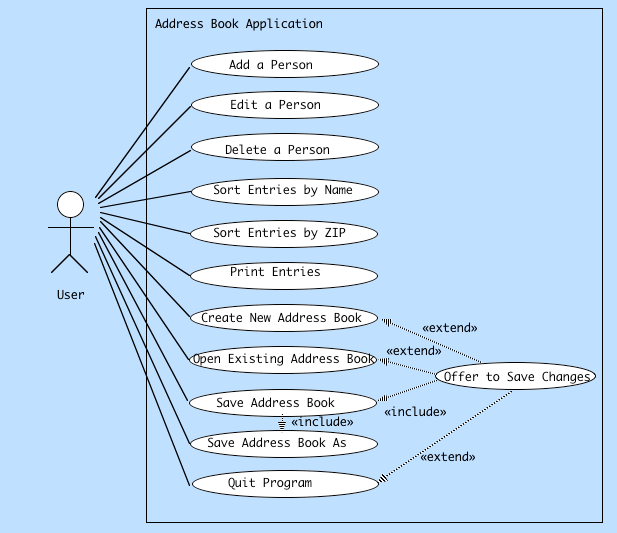

Functional Programming vs. Object-Oriented Programming
The SuperHeros Analogy
Basic Definition/Description:
Functional Programming:
"...a programming paradigm, a style of building the structure and elements of computer programs, that treat computation as the evaluation of mathematical functions and avoids state and mutable data. Functional programming emphasizes functions that produce results that depend only on their inputs and not on the program state..."1
It is not only mathematical in its design, but rather philosophical. It deals with the reduction of systems to abstractions.
*originally developed to achieve a clearer approach to the foundations of mathematics.
Object-Oriented Programming:
Object-Oriented Programming involves the creation of classes, objects, instances, and methods in order to model the world. These classes and object have associated data fields and interact with one another. It also is concern with the reduction of systems into abstractions.2
They have many similarities, both strive to model the real world, manipulate data, and produce results. It is more how these abstractions "interact/behave" that is at the core of the difference between Functional and Object-Oriented Programming.
Functional Programming takes in information. This information is assigned to variables and if this variable is called at any time, it has the same value, hence immutable. Object-Oriented Programming takes in data and assigns it to variables. The value of these variables can fluidly change throughout the process.
Functional Programming also seems like a well oiled machined that is designed to process through data in steps. It is also very linear in its thinking. One process follows another, follows another, follows another. Object-Oriented Programming seems very organic. It is almost like we are populating a world with creatures.
The SuperHero Analogy
In Functional Programming, our SuperHero has certain abilities that will be processed as we move through the program. Information about the world around our SuperHero comes in and our SuperHero responds. An outcome is determined, the world is either in chaos or peace.
In Object-Oriented Programming, our SuperHero is born with certain present abilities/powers. The world around our SuperHero is also born and these objects interact. They work with each other, they feed off of each other, they defeat each other. We are very much concerned with the State of all of our objects. Along the way, a Villain gains the abilities of a certain class, thus shifting the balance of power.
In many ways, they are the same. Recall both pull in data and create outputs/outcomes. I wonder how much this narrative/philosophical difference gives rise to different end results, different products depending on which system your mind is operating in?
An Example of Functional Programming
function sum(numbers) {
var total = 0;
forEach(numbers, function (number) {
total += number;
});
return total;
}
show(sum([1, 10, 100]));
An Example of Object-Oriented Programming
To see the code behind each method